To understand S100A6 biology, we want to know:
- How does the protein recognize its known targets?
- What other targets does it bind?
S100A6 binds to diverse targets
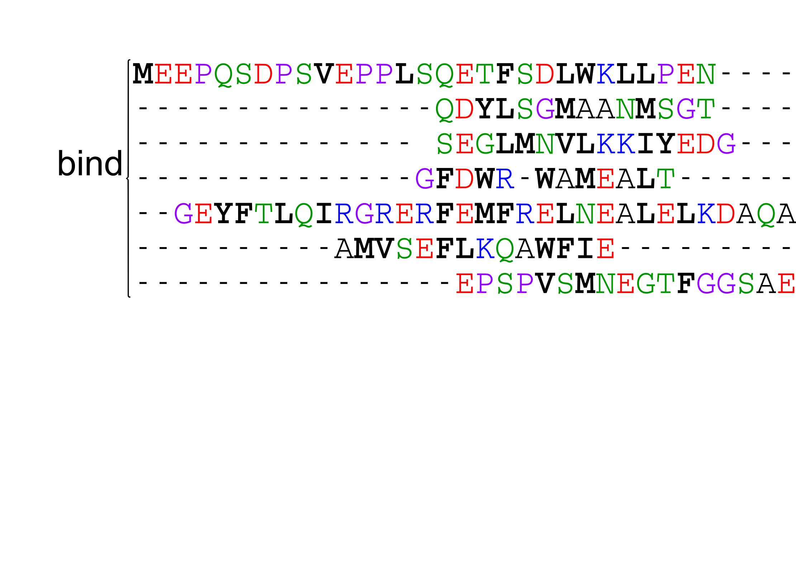REFS HERE
S100A6 binds to diverse targets
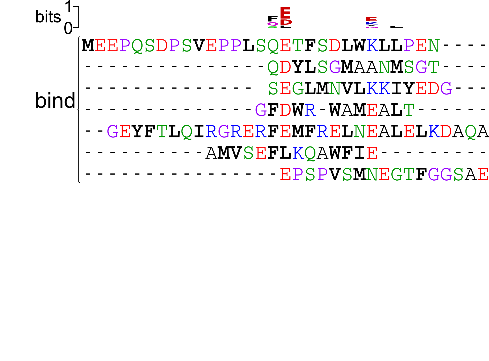REFS HERE
S100A6 binds to diverse targets
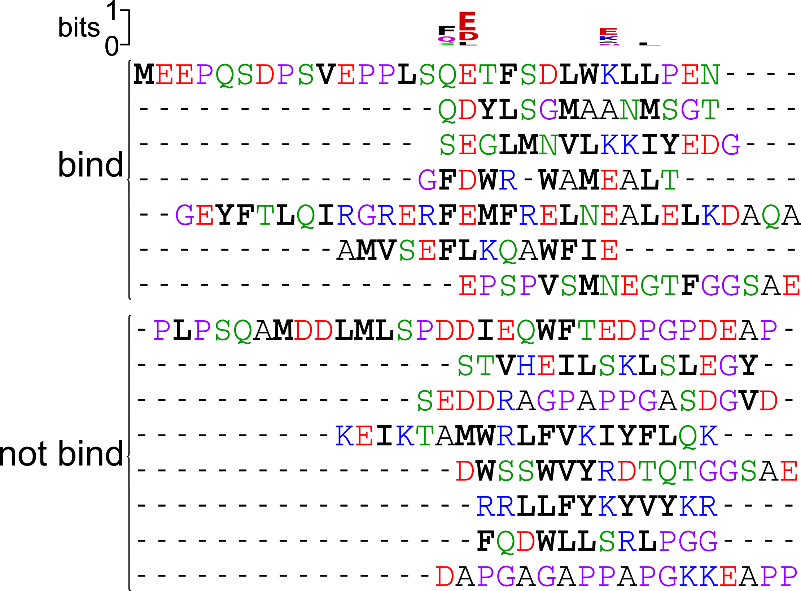REFS HERE
Maybe these proteins bind at different locations on the protein?
$^{1}H-^{15}N$ HSQC NMR spectra identify residues whose chemical environment changes on peptide binding
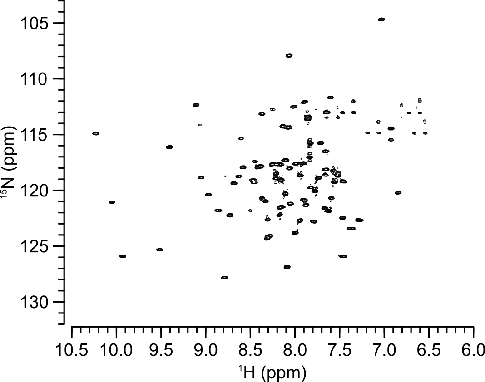$^{1}H-^{15}N$ HSQC NMR spectra identify residues whose chemical environment changes on peptide binding
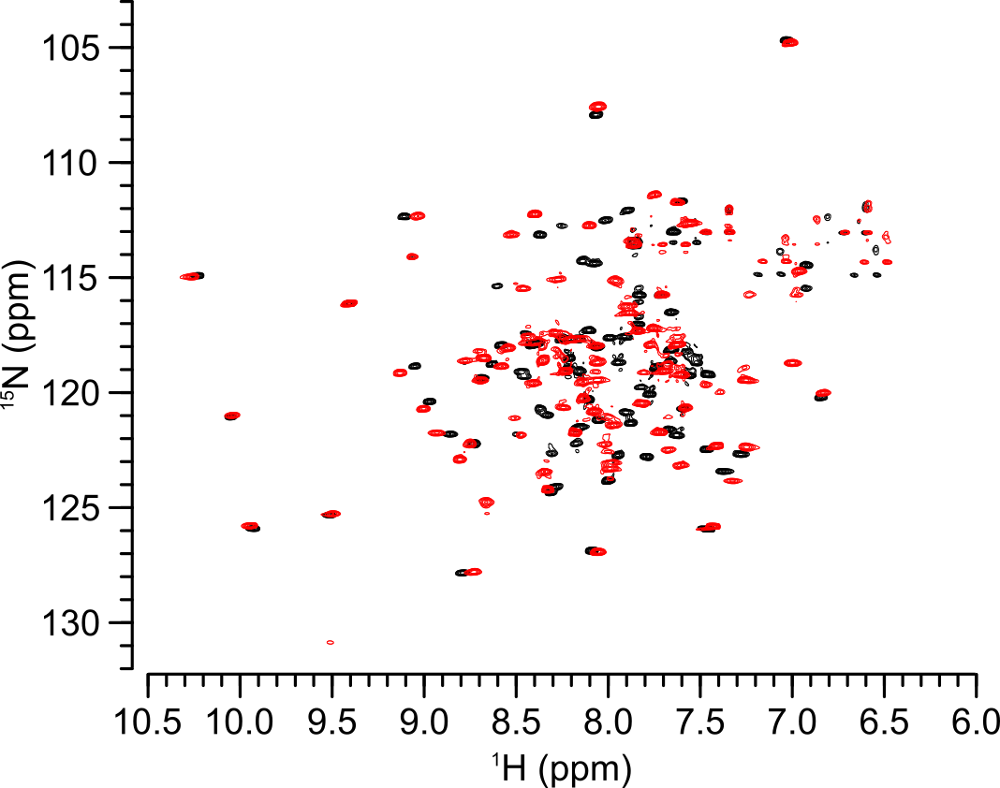$^{1}H-^{15}N$ HSQC NMR spectra identify residues whose chemical environment changes on peptide binding
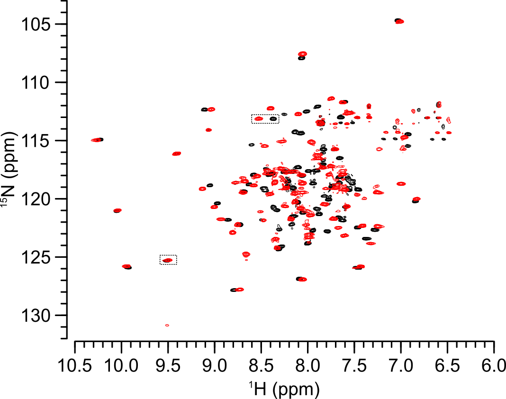Maybe its binding specificity does not matter?
S100A5 and S100A6 exhibit conserved peptide specificity
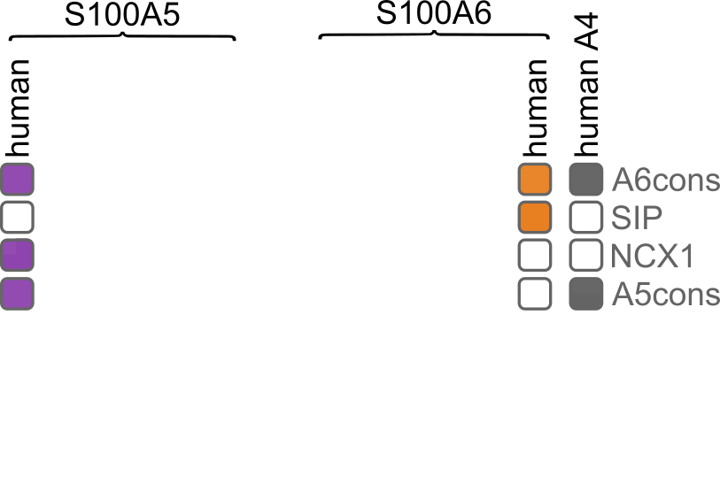 Wheeler LC, ... Harms MJ (2017) BiochemistryS100A5 and S100A6 exhibit conserved peptide specificity
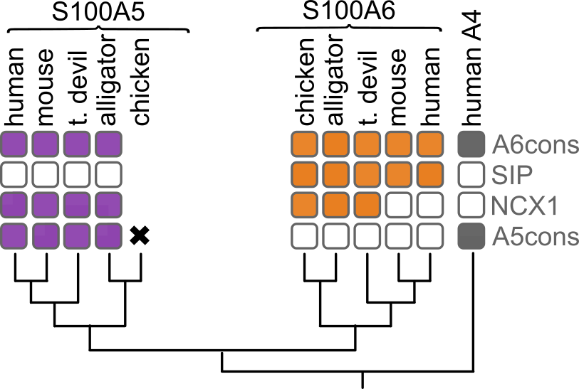 Wheeler LC, ... Harms MJ (2017) BiochemistryS100A5 and S100A6 exhibit conserved peptide specificity
 Wheeler LC, ... Harms MJ (2017) Biochemistry
Wheeler LC, ... Harms MJ (2017) Biochemistry
S100A5 and S100A6 exhibit conserved peptide specificity
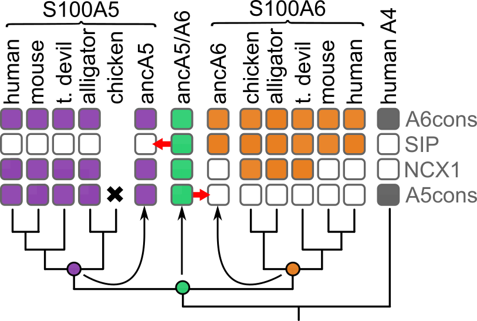 Wheeler LC, ... Harms MJ (2017) BiochemistryWhat 'rules' does this protein use to recognize its targets?
Characterize specificity by phage display
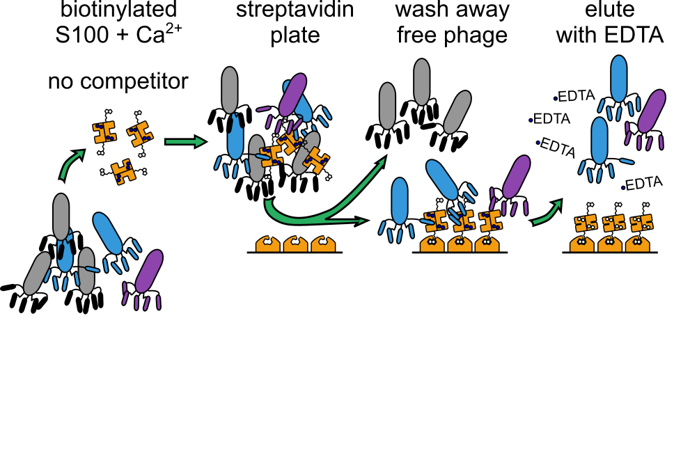Characterize specificity by phage display
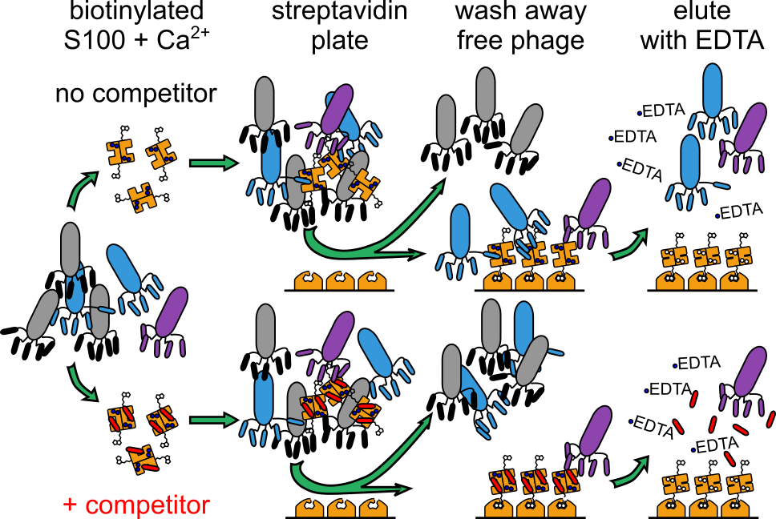Use machine learning to make predictive model
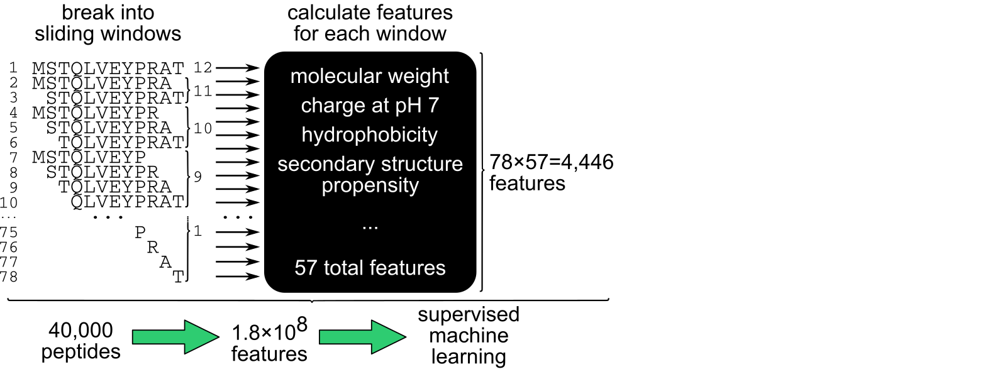Use machine learning to make predictive model
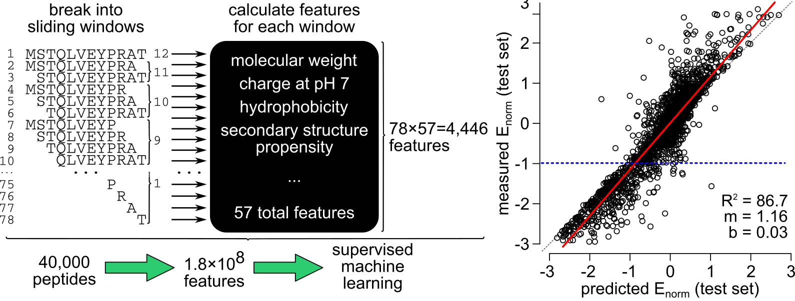- What is the structural basis for this interaction?
- Is there any basis for specificity besides simple shape?